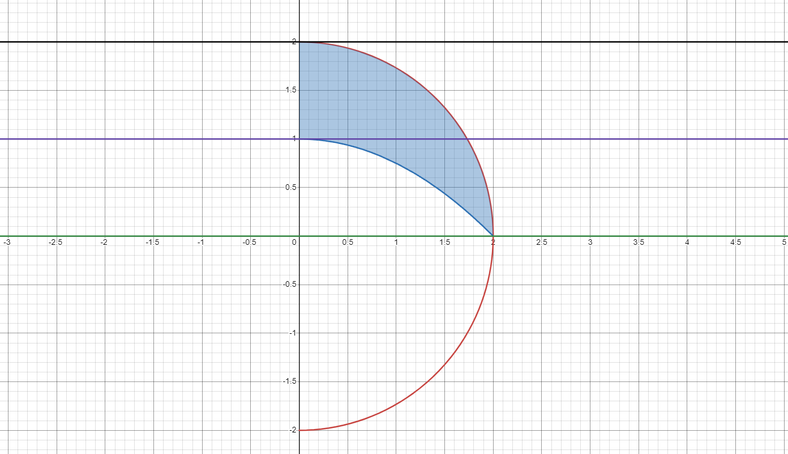
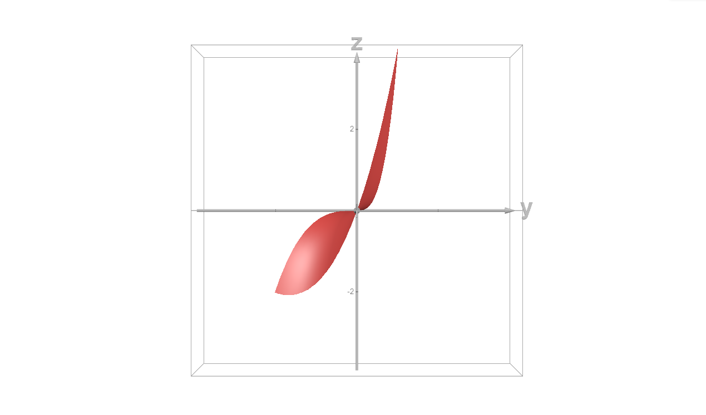

Calculus, Homework 1
Artemis Sinelnikov, EDA-231
Problem 1
Bring the double integral ∬ D f ( x , y ) d x d y \iint\limits_Df(x,y)dxdy D ∬ f ( x , y ) d x d y
D = { ( x , y ) ∣ x ∈ [ 0 , 1 2 ] , y ∈ [ 0 , 1 ] , ( x − 1 ) 2 + ( y − 1 ) 2 ≥ 1 } D=\{(x,y)|x\in[0,\tfrac{1}{2}], y\in[0,1],(x-1)^2+(y-1)^2\geq 1\} D = {( x , y ) ∣ x ∈ [ 0 , 2 1 ] , y ∈ [ 0 , 1 ] , ( x − 1 ) 2 + ( y − 1 ) 2 ≥ 1 } First and foremost, let's plot the area that we'd be calculating via integration.
Consider that the first way to iterate the double integral would be to slice it vertically.
X-range would be [ 0 , 1 2 ] [0, \tfrac{1}{2}] [ 0 , 2 1 ]
Calculating Y-range, we get:
( x − 1 ) 2 + ( y − 1 ) 2 ≥ 1 (x-1)^2+(y-1)^2\geq1 ( x − 1 ) 2 + ( y − 1 ) 2 ≥ 1 ( y − 1 ) 2 ≥ 1 − ( x − 1 ) 2 (y-1)^2\geq1-(x-1)^2 ( y − 1 ) 2 ≥ 1 − ( x − 1 ) 2 Since this is the lower half of the circle,
y − 1 ≤ − 1 − ( x − 1 ) 2 y-1\leq-\sqrt{1-(x-1)^2} y − 1 ≤ − 1 − ( x − 1 ) 2 y ≤ 1 − 1 − ( x − 1 ) 2 y\leq1-\sqrt{1-(x-1)^2} y ≤ 1 − 1 − ( x − 1 ) 2 the expression above is the upper bound and 0 0 0
∫ 0 1 2 d x ∫ 0 1 − 1 − ( x − 1 ) 2 f ( x , y ) d y \int_0^{\frac{1}{2}}dx\int^{1-\sqrt{1-(x-1)^2}}_0f(x,y)dy ∫ 0 2 1 d x ∫ 0 1 − 1 − ( x − 1 ) 2 f ( x , y ) d y Now slice the integral horizontally.
The Y-range would be [ 0 , 1 ] [0, 1] [ 0 , 1 ]
The expression for the circlular arc upper bound would be equivalent since the circle expression is symmetric over x = y x=y x = y
x ≤ 1 − 1 − ( y − 1 ) 2 x\leq1-\sqrt{1-(y-1)^2} x ≤ 1 − 1 − ( y − 1 ) 2 However, as we may see above, there are two sectors divided by the blue dashed line. The separating point would be
y = 1 − 1 − ( 1 2 − 1 ) 2 = 1 − 3 4 y=1-\sqrt{1-\left(\frac{1}{2}-1\right)^2}=1-\sqrt{\frac{3}{4}} y = 1 − 1 − ( 2 1 − 1 ) 2 = 1 − 4 3 This would split our horizontal slice into two parts with two Y-ranges, those being [ 0 , 1 − 3 4 ] \left[0,1-\sqrt\frac{3}{4}\right] [ 0 , 1 − 4 3 ] [ 1 − 3 4 , 1 ] \left[1-\sqrt\frac{3}{4}, 1\right] [ 1 − 4 3 , 1 ]
The first part is bounded by x = [ 0 , 1 2 ] x=[0, \tfrac{1}{2}] x = [ 0 , 2 1 ]
∫ 0 1 − 3 4 d y ∫ 0 1 2 f ( x , y ) d x + ∫ 1 − 3 4 1 d y ∫ 0 1 − 1 − ( y − 1 ) 2 f ( x , y ) d x \int_0^{1-\sqrt\frac{3}{4}}dy\int_0^{\frac{1}{2}}f(x,y)dx+\int_{1-\sqrt\frac{3}{4}}^1dy\int_0^{1-\sqrt{1-(y-1)^2}}f(x,y)dx ∫ 0 1 − 4 3 d y ∫ 0 2 1 f ( x , y ) d x + ∫ 1 − 4 3 1 d y ∫ 0 1 − 1 − ( y − 1 ) 2 f ( x , y ) d x Problem 2
Change the order of integration in the iterated integal:
∫ 0 1 d y ∫ 4 − 4 y 4 − y 2 f ( x , y ) d x + ∫ 1 2 d y ∫ 0 4 − y 2 f ( x , y ) d x \int\limits^1_0dy\int\limits^{\sqrt{4-y^2}}_{\sqrt{4-4y}}f(x,y)dx+\int\limits^2_1dy\int\limits^{\sqrt{4-y^2}}_0f(x,y)dx 0 ∫ 1 d y 4 − 4 y ∫ 4 − y 2 f ( x , y ) d x + 1 ∫ 2 d y 0 ∫ 4 − y 2 f ( x , y ) d x Area that we're considering looks like this:

The red line denotes graph 4 − y 2 \sqrt{4-y^2} 4 − y 2
The blue line denotes graph 4 − 4 y \sqrt{4-4y} 4 − 4 y
It is obvious that when changing the order of integration to the vertical case, we simply take the red line as the upper bound and the blue line as the lower bound. This allows us to use a single double integral over the Y-range of [ 0 , 2 ] [0, 2] [ 0 , 2 ]
∫ 0 2 d x ∫ 4 − 4 y 4 − y 2 f ( x , y ) d y \int\limits^2_0dx\int\limits^{\sqrt{4-y^2}}_{\sqrt{4-4y}}f(x,y)dy 0 ∫ 2 d x 4 − 4 y ∫ 4 − y 2 f ( x , y ) d y Problem 3
Calculate the integral:
∫ 0 2 x 2 d x ∫ x 2 ln ( 1 + y 2 ) d y \int\limits^2_0x^2dx\int\limits^2_x\ln(1+y^2)dy 0 ∫ 2 x 2 d x x ∫ 2 ln ( 1 + y 2 ) d y Visualizing the boundaries, we get:
To calculate the integral, transfer x 2 x^2 x 2 y y y
I = ∫ 0 2 d x ∫ x 2 x 2 ln ( 1 + y 2 ) d y = ∫ 0 2 ∫ x 2 x 2 ln ( 1 + y 2 ) d y d x \mathcal{I}=\int\limits^2_0dx\int\limits^2_xx^2\ln(1+y^2)dy=\int\limits^2_0\int\limits^2_xx^2\ln(1+y^2)dydx I = 0 ∫ 2 d x x ∫ 2 x 2 ln ( 1 + y 2 ) d y = 0 ∫ 2 x ∫ 2 x 2 ln ( 1 + y 2 ) d y d x
Now change the order of integration, which would be bounded between x = 0 x=0 x = 0 x = y x=y x = y 0 0 0
I = ∫ 0 2 ∫ 0 y x 2 ln ( 1 + y 2 ) d x d y = ∫ 0 2 x 3 ln ( 1 + y 2 ) 3 ∣ 0 y d y = ∫ 0 2 y 3 ln ( 1 + y 2 ) 3 d y = 1 3 ∫ 0 2 y 3 ln ( 1 + y 2 ) d y \begin{align*}\mathcal{I}&=\int\limits^2_0\int\limits^y_0x^2\ln(1+y^2)dxdy=\int\limits^2_0\frac{x^3\ln(1+y^2)}{3}\biggr|^y_0dy\\&=\int\limits^2_0\frac{y^3\ln(1+y^2)}{3}dy=\frac{1}{3}\int\limits^2_0y^3\ln(1+y^2)dy\end{align*}
I = 0 ∫ 2 0 ∫ y x 2 ln ( 1 + y 2 ) d x d y = 0 ∫ 2 3 x 3 ln ( 1 + y 2 ) ∣ ∣ 0 y d y = 0 ∫ 2 3 y 3 ln ( 1 + y 2 ) d y = 3 1 0 ∫ 2 y 3 ln ( 1 + y 2 ) d y
Now we could integrate by parts.
∫ f d g = f g − ∫ g d f \int fdg=fg-\int gdf ∫ fd g = f g − ∫ g df f = ln ( 1 + y 2 ) , d g = y 3 d y f=\ln(1+y^2),\quad dg=y^3dy f = ln ( 1 + y 2 ) , d g = y 3 d y d f = 2 y 1 + y 2 , g = y 4 4 df=\frac{2y}{1+y^2},\quad g=\frac{y^4}{4} df = 1 + y 2 2 y , g = 4 y 4 1 3 ∫ y 3 ln ( 1 + y 2 ) d y = y 4 ln ( 1 + y 2 ) 12 + 1 6 ∫ y 5 1 + y 2 d y \frac{1}{3}\int y^3\ln(1+y^2)dy=\frac{y^4\ln(1+y^2)}{12}+\frac{1}{6}\int \frac{y^5}{1+y^2}dy 3 1 ∫ y 3 ln ( 1 + y 2 ) d y = 12 y 4 ln ( 1 + y 2 ) + 6 1 ∫ 1 + y 2 y 5 d y
Now substitute u = y 2 , d u = 2 y d y ⟹ d y = d u 2 y u=y^2,\ du=2ydy\implies dy=\frac{du}{2y} u = y 2 , d u = 2 y d y ⟹ d y = 2 y d u
y 4 ln ( 1 + y 2 ) 12 − 1 12 ∫ u 2 1 + u d u \frac{y^4\ln(1+y^2)}{12}-\frac{1}{12}\int \frac{u^2}{1+u}du 12 y 4 ln ( 1 + y 2 ) − 12 1 ∫ 1 + u u 2 d u y 4 ln ( 1 + y 2 ) 12 − 1 12 ∫ u 2 + 2 u + 1 − 2 u − 1 1 + u d u \frac{y^4\ln(1+y^2)}{12}-\frac{1}{12}\int \frac{u^2+2u+1-2u-1}{1+u}du 12 y 4 ln ( 1 + y 2 ) − 12 1 ∫ 1 + u u 2 + 2 u + 1 − 2 u − 1 d u y 4 ln ( 1 + y 2 ) 12 − 1 12 ∫ ( u + 1 ) 2 − 2 u − 2 + 1 u + 1 d u \frac{y^4\ln(1+y^2)}{12}-\frac{1}{12}\int \frac{(u+1)^2-2u-2+1}{u+1}du 12 y 4 ln ( 1 + y 2 ) − 12 1 ∫ u + 1 ( u + 1 ) 2 − 2 u − 2 + 1 d u y 4 ln ( 1 + y 2 ) 12 − 1 12 ∫ ( u + 1 ) 2 − 2 ( u + 1 ) + 1 u + 1 d u \frac{y^4\ln(1+y^2)}{12}-\frac{1}{12}\int \frac{(u+1)^2-2(u+1)+1}{u+1}du 12 y 4 ln ( 1 + y 2 ) − 12 1 ∫ u + 1 ( u + 1 ) 2 − 2 ( u + 1 ) + 1 d u y 4 ln ( 1 + y 2 ) 12 − 1 12 ∫ ( u + 1 − 2 + 1 u + 1 ) d u \frac{y^4\ln(1+y^2)}{12}-\frac{1}{12}\int \left(u+1-2+\frac{1}{u+1}\right)du 12 y 4 ln ( 1 + y 2 ) − 12 1 ∫ ( u + 1 − 2 + u + 1 1 ) d u y 4 ln ( 1 + y 2 ) 12 − 1 12 ∫ ( u − 1 + 1 u + 1 ) d u \frac{y^4\ln(1+y^2)}{12}-\frac{1}{12}\int \left(u-1+\frac{1}{u+1}\right)du 12 y 4 ln ( 1 + y 2 ) − 12 1 ∫ ( u − 1 + u + 1 1 ) d u y 4 ln ( 1 + y 2 ) 12 + 1 12 ( u 2 2 − u + ln ( u + 1 ) ) \frac{y^4\ln(1+y^2)}{12}+\frac{1}{12}\left(\frac{u^2}{2}-u+\ln(u+1)\right) 12 y 4 ln ( 1 + y 2 ) + 12 1 ( 2 u 2 − u + ln ( u + 1 ) ) y 4 ln ( 1 + y 2 ) 12 + 1 12 ( y 4 2 − y 2 + ln ( y 2 + 1 ) ) \frac{y^4\ln(1+y^2)}{12}+\frac{1}{12}\left(\frac{y^4}{2}-y^2+\ln(y^2+1)\right) 12 y 4 ln ( 1 + y 2 ) + 12 1 ( 2 y 4 − y 2 + ln ( y 2 + 1 ) ) 1 12 ( y 4 − 1 ) ln ( y 2 + 1 ) − 1 24 y 2 ( y 2 − 2 ) \frac{1}{12}(y^4-1)\ln(y^2+1)-\frac{1}{24}y^2(y^2-2) 12 1 ( y 4 − 1 ) ln ( y 2 + 1 ) − 24 1 y 2 ( y 2 − 2 )
Finally, calculate the definite integral by plugging in y = 2 y=2 y = 2
15 12 ln ( 5 ) − 8 24 = 5 3 ln ( 5 ) − 1 3 \frac{15}{12}\ln(5)-\frac{8}{24}=\frac{5}{3}\ln(5)-\frac{1}{3} 12 15 ln ( 5 ) − 24 8 = 3 5 ln ( 5 ) − 3 1 Problem 4
Calculate integral
∬ D x 2 y d x d y \iint\limits_Dx^2ydxdy D ∬ x 2 y d x d y where D D D ( 0 , 0 ) , ( 2 , 1 ) , ( 1 , − 2 ) (0,0),(2,1),(1,-2) ( 0 , 0 ) , ( 2 , 1 ) , ( 1 , − 2 )
The bounding box of the triangle would be denoted by the following three lines:
which are
{ 2 y = x green y 3 + 5 3 = x purple − y 2 = x black \begin{cases}
2y=x & \text{green}\\
\frac{y}{3}+\frac{5}{3}=x & \text{purple}\\
-\frac{y}{2}=x & \text{black}
\end{cases} ⎩ ⎨ ⎧ 2 y = x 3 y + 3 5 = x − 2 y = x green purple black The figure we need to calculate is
which I will split into two parts horizontally over y = 0 y=0 y = 0

Thus we'd have
∫ − 2 0 d y ∫ 2 y y 3 + 5 3 x 2 y d x ⏟ I A + ∫ 0 1 d y ∫ − y 2 y 3 + 5 3 x 2 y d x ⏟ I B \underbrace{\int^{0}_{-2}dy\int^{\frac{y}{3}+\frac{5}{3}}_{2y}x^2ydx}_{\mathcal{I_A}} + \underbrace{\int^1_0dy\int^{\frac{y}{3}+\frac{5}{3}}_{-\frac{y}{2}}x^2ydx}_{\mathcal{I_B}} I A ∫ − 2 0 d y ∫ 2 y 3 y + 3 5 x 2 y d x + I B ∫ 0 1 d y ∫ − 2 y 3 y + 3 5 x 2 y d x I A = ∫ 0 1 d y ∫ 2 y y 3 + 5 3 x 2 y d x = ∫ 0 1 ( x 3 y 3 ) ∣ 2 y y 3 + 5 3 d y = ∫ 0 1 ( ( y 3 + 5 3 ) 3 y 3 − ( 2 y ) 3 y 3 ) d y = ∫ 0 1 ( − 215 y 4 81 + 5 y 3 27 + 25 y 2 27 + 125 y 81 ) d y = − 215 y 5 405 + 5 y 4 108 + 25 y 3 81 + 125 y 2 162 ∣ 0 1 = 193 324 \begin{align*}\mathcal{I_A}&=\int^1_0dy\int^{\frac{y}{3}+\frac{5}{3}}_{2y}x^2ydx\\
&=\int^1_0\left(\frac{x^3y}{3}\right)\biggm|^{\frac{y}{3}+\frac{5}{3}}_{2y}dy\\
&=\int^1_0\left(\frac{(\frac{y}{3}+\frac{5}{3})^3y}{3}-\frac{(2y)^3y}{3}\right)dy\\
&=\int^1_0\left(-\frac{215y^4}{81}+\frac{5y^3}{27}+\frac{25y^2}{27}+\frac{125y}{81}\right)dy\\
&=-\frac{215y^5}{405}+\frac{5y^4}{108}+\frac{25y^3}{81}+\frac{125y^2}{162}\biggm|^1_0\\
&=\frac{193}{324}
\end{align*} I A = ∫ 0 1 d y ∫ 2 y 3 y + 3 5 x 2 y d x = ∫ 0 1 ( 3 x 3 y ) ∣ ∣ 2 y 3 y + 3 5 d y = ∫ 0 1 ( 3 ( 3 y + 3 5 ) 3 y − 3 ( 2 y ) 3 y ) d y = ∫ 0 1 ( − 81 215 y 4 + 27 5 y 3 + 27 25 y 2 + 81 125 y ) d y = − 405 215 y 5 + 108 5 y 4 + 81 25 y 3 + 162 125 y 2 ∣ ∣ 0 1 = 324 193 I B = ∫ − 2 0 d y ∫ − y 2 y 3 + 5 3 x 2 y d x = ∫ − 2 0 ( x 3 y 3 ) ∣ − y 2 y 3 + 5 3 d y = ∫ − 2 0 ( ( y 3 + 5 3 ) 3 y 3 − ( − y 2 ) 3 y 3 ) d y = ∫ − 2 0 ( 35 y 4 648 + 5 y 3 27 + 25 y 2 27 + 125 y 81 ) d y = 35 y 5 3240 + 5 y 4 108 + 25 y 3 81 + 125 y 2 162 ∣ − 2 0 = − 82 81 \begin{align*}
\mathcal{I_B}&=\int^{0}_{-2}dy\int^{\frac{y}{3}+\frac{5}{3}}_{-\frac{y}{2}}x^2ydx\\
&=\int^{0}_{-2}\left(\frac{x^3y}{3}\right)\biggm|^{\frac{y}{3}+\frac{5}{3}}_{-\frac{y}{2}}dy\\
&=\int^{0}_{-2}\left(\frac{(\frac{y}{3}+\frac{5}{3})^3y}{3}-\frac{(-\frac{y}{2})^3y}{3}\right)dy\\
&=\int^{0}_{-2}\left(\frac{35y^4}{648}+\frac{5y^3}{27}+\frac{25y^2}{27}+\frac{125y}{81}\right)dy\\
&=\frac{35y^5}{3240}+\frac{5y^4}{108}+\frac{25y^3}{81}+\frac{125y^2}{162}\biggm|^{0}_{-2}\\
&=-\frac{82}{81}
\end{align*} I B = ∫ − 2 0 d y ∫ − 2 y 3 y + 3 5 x 2 y d x = ∫ − 2 0 ( 3 x 3 y ) ∣ ∣ − 2 y 3 y + 3 5 d y = ∫ − 2 0 ( 3 ( 3 y + 3 5 ) 3 y − 3 ( − 2 y ) 3 y ) d y = ∫ − 2 0 ( 648 35 y 4 + 27 5 y 3 + 27 25 y 2 + 81 125 y ) d y = 3240 35 y 5 + 108 5 y 4 + 81 25 y 3 + 162 125 y 2 ∣ ∣ − 2 0 = − 81 82 I A + I B = 193 324 − 82 81 = − 5 12 \mathcal{I_A}+\mathcal{I_B}=\frac{193}{324}-\frac{82}{81}=-\frac{5}{12} I A + I B = 324 193 − 81 82 = − 12 5